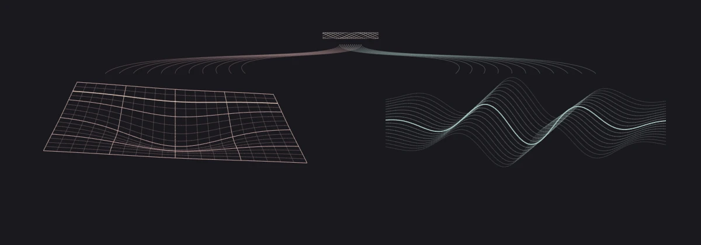

Keep the same physical history.
Build the slice-by-slice description, separate coordinate changes from physical ones, close the classical constraints, and construct matter-filled examples.
Start the classical branchThe gravity-quantum arc / Amos Jay Maley
Two descriptions. One physical world.
In AASC, gravity and quantum theory are not separate foundations that must somehow be joined. Both arise from the same necessary structure; this arc builds the conditions under which their physical descriptions agree.

One underlying physical interior
01 / The Kernel and uniqueness
A ruler already assumes that positions can be compared. A clock already assumes that change can be identified. An equation already assumes that its symbols keep referring to the same things.
AASC starts with what those descriptions depend on. A determinate construction must preserve identity, distinguish legitimate continuation from failure, and prevent a later change of description from rewriting what an earlier act established.
These are necessary roles, not optional rules placed on top of physics. The Kernel establishes them. The uniqueness paper closes the possibility of competing admissible interiors on that same fixed domain.
The KernelThe uniqueness result
The four roles are admissibility, standing, reference, and irreversibility. The Kernel's exhaustion argument concerns identity-preserving, non-degenerate construction on a fixed domain. Its boundary is AMetric: a distance, rank, probability, or hidden selector cannot serve as the authority that licenses construction.
Unus Solus Possibilis Est, theorems 6 and 7, establishes uniqueness of the admissible interior in the standing-instantiated application. It does not pick a unique particle configuration, initial state, or set of numerical constants. The fixed-domain requirement remains part of the claim.
02 / Gravity and Einstein dynamics
The first gravity paper asks what holds a physical description together: which states count, which changes are legitimate, and which apparent differences are only changes in how we describe the same state.
It identifies the necessary constraint role that general relativity embodies. The spacetime metric comes later. It is a way of expressing that role, not its primitive source.
The Einstein paper then asks a sharper question. In the established four-dimensional spacetime description, what is the minimal local response to curvature that keeps the source accounting consistent? Its exhaustion argument fixes the Einstein equation's form.
The metric-facing description
Gμν + Λgμν = κTμν
The source represents established physical response. Writing the tensor does not create that response.
Gravity as Structural NecessityEinstein Dynamics
The gravity-role theorem uses the regular AER comparison class. The Einstein theorem then works in a faithful four-dimensional Lorentzian projection with a local, symmetric, first-curvature response. The candidate form is aRμν + bRgμν + cgμν. Closed source continuation and the contracted curvature identity fix b = −a/2.
This establishes the minimal first-response form, not all possible gravitational models. Higher-curvature terms, extra fields, nonlocal responses, and open source accounts require their own declared scope. Numerical constants still require scale and calibration anchors.
03 / The ten-paper Wheeler-DeWitt branch
A sequence of spacetime slices can be labelled with a time coordinate. But a label is not yet a physical clock, and changing the slicing need not change the history.
The Wheeler-DeWitt branch follows this distinction all the way through: from an Einstein-source history, through its classical constraints, into a constructed quantum constraint system and a physical account of clocks and records.
The question becomes relational: what does one physical quantity record when another provides the clock? The final paper constructs three different clock descriptions and proves their agreement on their shared domain.
Different clocks. The same history.
The scalar matter-field profile supplies the local clock. Other records are compared at that profile, not at an externally imposed universal time.
Schematic correspondence, not plotted WDW solution data. The clocks are whole local profiles, not three rescalings of one stopwatch.
Build the slice-by-slice description, separate coordinate changes from physical ones, close the classical constraints, and construct matter-filled examples.
Start the classical branchBuild the setting the quantum equation needs. The first candidates fail, so the next paper constructs a distinct, explicitly corrected successor with a nonzero physical state.
Read the quantum constructionEstablish relational record change, a controlled classical comparison, complete joint closure, and agreement between different local clock descriptions.
Follow the clock and closure papersThe completed Branch-A realization has a positive rank-one physical quotient. WDW 7 derives a zero covariant Hamiltonian on that generated quantum fibre, while a separately source-attached volume record changes. The changing record is not a second quantum state, and the tour does not depict a nonzero WDW wave-packet dynamics.
WDW 8 constructs a local Einstein-scalar recovery germ with explicit errors; it does not identify its comparison states with the physical WDW anchor. WDW 9 closes the thirteen required interfaces. WDW 10 constructs scalar, local-volume, and curvature profile clocks and their clock-neutral descent on the retained regular lineage. It does not produce one global monotonic clock, enlarge the physical domain, or complete Standard Model quantum gravity.
The reading order is a guide, not a claim that every theorem is independent of all later-listed papers. For example, WDW 1 retains Module A source attachment, while WDW 9's generic quantum-standing export supplies an input to the current Schrödinger projection theorem. These are distinct theorem interfaces, not a transfer of the WDW example into a larger quantum state space.
04 / The Schrodinger projection
The quantum side first needs meaningful state identity, consistent transition comparisons, and a continuation that preserves them. The later mathematics has to represent that structure faithfully.
The Schrödinger paper takes the generic quantum-standing construction exported by WDW 9, then establishes its own spatial representation and operator requirements. It does not turn the one-state WDW example into all of ordinary quantum mechanics.
For a closed, scalar, nonrelativistic system, the minimal first spatial response has the familiar kinetic-plus-potential form. After the required scales are fixed, this gives Schrödinger evolution.
The quantum-facing description
iℏ∂tψ = Hψ
H = −(ℏ2/2m)Δ + V
This is closed-system evolution. Measurement updates and open systems require a different account.
Schrodinger DynamicsThe WDW standing export
W9.19 constructs quotient-level standing, separated transition weights, descended continuation and composition, and naturality from its explicit representative certificate. Its WDW witness is rank one. W10.25 supplies the clock-neutral occupied realization.
The spatial Schrödinger theorem separately carries the faithful projective-Hilbert and L2 projection, Wigner implementation, phase lift, strong continuity, self-adjoint realization, fixed operator domains, and spatial first-response exhaustion. Its H = aΔ + MV normal form excludes undeclared spin, gauge, nonlinear, open-system, and measurement/update structure from that minimal target; it does not deny those richer regimes.
05 / Structural unification
One description expresses spacetime and its sources. The other expresses quantum states and their continuation. In the unification argument, neither creates the other: both must refer to the same admissible physical interior.
Sharing a foundation is not the end of the work. When the descriptions are used together, their source accounting, physical records, compatibility, and continuation have to agree.
The underlying physical interior stays the same
Together, the two descriptions have to preserve the same source, physical records, and compatible history. Agreement cannot be added by silently changing the underlying target.
A conceptual illustration of paired descriptions, not a numerical Einstein or Schrodinger solution or a physical transmission between them.
Singleton admissible-interior closure supplies the upstream unity. The joint-ledger theorem supplies the conditions for using the metric and quantum projections together: source closure, record fixation, boundary compatibility, lawful redescription, joint continuation, and reportability.
The structural result does not assert that every proposed coupling is already constructed. Semiclassical, field-theoretic, open, and other richer continuations retain their own declared burdens. In this framing, gravity's prior constraint role is not a primitive object to quantize; the later canonical quantum construction must preserve that role.
06 / Constructive physical realization
Modules A–D turn the structural unity into a complete matched construction for the specified physical target. Each resolves a different part of the agreement.
Module A / Account for the whole source
The source includes the complete system: constituents, fields, interactions, binding, and any boundary exchange. Count each contribution once. What one part gives to another cancels in the combined internal exchange; what crosses the system boundary must remain in the account.
Read Module AThe internal loss and gain cancel in the combined source account. No external exchange has been introduced.
A schematic of source accounting, not a global energy-conservation theorem for arbitrary curved spacetime.
The mass sourcing the gravitational response and the mass in the quantum kinetic term are traced through the same total source. In the established stable scalar setting, one common calibration makes their readouts equal.
Gravitational readout=Inertial readout
Construct one underlying continuation first. Its gravity, quantum, record, and compatibility descriptions must then follow that same continuation. External exchanges stay explicit rather than being hidden inside a change of description.
Assemble the complete source, state, continuation, and matching data. For that exact target, prove that every required role is occupied consistently and that equivalent descriptions do not create extra physical realizations.
The final closure
The capstone integrates the four modules: the sources are attached, the mass readouts match, the continuations agree, and the complete set of interfaces closes. The result is a realization of the specified gravity-quantum target, unique up to lawful changes of description.
Read the final closure paperModule A constructs attachment-certified distributional sources and finite composite exchange cancellation. Module B uses a common total energy-momentum operator, a stable positive-mass spin-zero sector, exact zero-transfer Ward normalization, and a Wigner-to-Bargmann contraction. The active and inertial readouts are proportional before common calibration and equal after it.
Module C fixes a regular local clock and an explicit upstream seed; closed and exchange-extended processes remain separately typed. Module D constructs the source-locked tensor completion and its lawful presentation quotient before closing eight target-relative fibres and their incidences.
The capstone does not assert uniqueness across changed sources, potentials, initial states, or seeds. Its weak-equivalence result remains separately conditional on the stated small-body assumptions. It does not claim strong equivalence, a nonzero interacting quantum-gravity law, or a calculation of all quantum-gravity phenomena. These limits distinguish a completed construction from a broader claim the papers do not make.
The complete dependency suite / 21 papers
The foundations, both physical projections, all ten Wheeler-DeWitt manuscripts, and the five constructive-realization papers. Each entry links to the archive record and its all-versions DOI.
Establishes the basic requirements for a determinate construction: its identity, legitimate use, and continuation must remain consistent. Those requirements come before a ruler, a clock, or a physical equation.
Fixed-domain, identity-preserving non-degenerate construction; not an unrestricted claim about arbitrary symbol systems.
Shows why the same fixed domain cannot have two competing admissible interiors. This supplies the common foundation that the gravity and quantum descriptions must share.
Uniqueness in the standing-instantiated fixed-domain application; not a selection of every physical state or numerical parameter.
Identifies gravity's prior role: the constraints that let physical states, comparisons, and changes belong to a coherent physical world. Spacetime curvature is a later description of that role.
The regular AER physical comparison class; a structural gravity-role theorem, not yet an Einstein-equation derivation.
Once a four-dimensional spacetime description is established, exhausts its minimal first-curvature responses. Consistent source accounting fixes the Einstein equation's form.
Minimal local first-response Lorentzian metric scope. Numerical constants need calibration; richer gravitational responses are separately typed.
Takes the established quantum-state structure into a closed, scalar nonrelativistic spatial description. Its minimal Hamiltonian has the familiar kinetic-plus-potential Schrodinger form.
Imports W9.19's generic standing construction; faithful spatial Hilbert representation, domains, and scale anchors remain separate burdens. It does not enlarge the rank-one WDW example or solve measurement.
Places the gravity and quantum descriptions on one underlying physical interior. Their interaction must preserve the same sources, records, and compatible continuation, not merely use similar-looking equations.
Paired first-response projections and joint-coupling discipline; not an exhaustive calculation of all richer quantum-gravity dynamics.
Rewrites the established Einstein-source history as spatial slices and their evolution, retaining the same physical source. A slice label is not yet a physical clock.
A source-faithful classical canonical construction on the declared regular globally hyperbolic target.
Separates a genuine physical change from a change in spatial description. Boundary charges and other physically meaningful differences are retained, not erased as mere coordinates.
Proper spatial and certified internal redescription; not yet normal-constraint or quantum closure.
Shows when different ways of slicing the same spacetime history describe the same physics. The comparison must preserve sources, records, and boundary information.
Classical constrained refoliation, occupied vacuum regular charts, and independently certified matter branches; singular and boundary cases remain distinguished.
Constructs a matter-filled classical example with a local physical clock, then a separately established Standard Model classical extension. This gives the quantum construction an actual classical starting point.
Distinct scalar-clock and torsion-free Standard Model classical constructions; not Standard Model quantum-gravity closure.
Builds the mathematical setting in which the Wheeler-DeWitt constraint can actually act. Writing down a formal equation alone is not enough to establish physical quantum states.
Two regulator-indexed algebraic candidate families and a common action domain; physical realization belongs to WDW 6.
Finds that the original unrenormalized candidates fail, then constructs a distinct renormalized successor. The completed Branch-A setting has a nonzero physical state space with a positive inner product.
Pointed, recordwise Branch A with a rank-one physical quotient. The failed original candidates are not revived; broader state and observable claims are not implied.
Relates change to a physical matter-clock profile rather than an external master clock. In the constructed example the volume record changes, even though the physical quantum ray does not.
The accepted rank-one generated fibre has zero covariant Hamiltonian. The richer full-Cauchy companion is separate; its nonzero source-forced Hamiltonian is not established here.
Checks that a carefully attached classical comparison recovers the same Einstein-source history. It keeps approximation errors and the point where the comparison stops being valid explicit.
Local compact-hyperbolic Einstein-scalar recovery germ; the physical anchor and comparison states are distinct, with no asserted norm convergence between them.
Assembles the preceding constructions and proves that their interfaces agree for the specified physical target. It also exports a quantum-standing construction used by the later Schrodinger treatment.
Thirteen-fibre Branch-A closure plus W9.19's generic standing-descent theorem and occupied rank-one example; no automatic transfer to a spatial L2 carrier.
Constructs matter, volume, and curvature clock descriptions and proves their agreement where they overlap. The shared physical account no longer depends on privileging one of those clocks.
Three genuinely different local profile clocks on the retained Branch-A lineage. Clock-neutral gluing does not mean one global monotonic clock or an enlarged spacetime domain.
Builds the stress-energy description from the physical response it represents. For a composite system, every contribution is counted once; internal exchanges cancel and external exchanges remain visible.
Attachment-certified source responses, tensor distributions, Ward-divergence correspondence, and finite composite closure; smoothness and global dynamics are separate.
Connects the mass that sources the gravitational response to the mass in quantum inertia through the same total source. A common calibration makes the two mass readouts equal in the established stable scalar setting.
Attached total energy-momentum source, stable positive-mass spin-zero sector, and declared Einstein/Newton and nonrelativistic calibrations. Not strong equivalence or every curved-spacetime mass notion.
Constructs one underlying continuation before reading off its gravitational, quantum, record, and compatibility descriptions. Agreement must persist as the system changes, with any external exchange accounted for.
A regular local fixed-clock construction with an explicit seed; separate closed and exchange-extended processes. Not a new universal interacting quantum-gravity law.
Checks that every required role and every shared interface is filled consistently. Once the exact source, state, and continuation target are fixed, one complete realization class remains up to lawful changes of description.
Eight target-relative fibres and their complete incidence conditions. Different sources, potentials, states, or seeds remain different targets.
Brings the source, common-mass, continuation, and completeness results together. The endpoint is a fully matched gravity-quantum realization of the specified target, not just two equations displayed side by side.
Complete-certificate closure in the accepted module envelopes; weak equivalence remains separately conditional, and no all-regime or nonzero interacting quantum-gravity law is claimed.
This tour explains the arguments developed in Amos Jay Maley's manuscripts. It is not an independent verification of their proofs or a claim of experimental confirmation. The papers state their hypotheses, dependencies, and exact scope.